Research board for the Jackson Roofing build (Plano, TX). Part A is the single best reference to build each already-approved detail against. Part B is eight new ideas beyond that set, ranked by how strongly each says "high tech, personal, mine" divided by effort (S=1, M=2, L=3). Nothing invents a number: every detail runs on data the app already holds (homes, MESH hail swaths, Daily 50, texts, replies, inspections) or on live public feeds. Captured 2026-10-10. The app's map is MapLibre, so Mapbox-only features are noted as custom work.
One reference per detail, chosen for the exact behaviour to copy, not the brand.
Copy Arc's per-space theming: the accent is sampled from Jackson's logo and tints every chip, line and ring, so the UI reads as his. Pair with the "Hi Cody" greeting layout already in the Dashboards V2 kit.
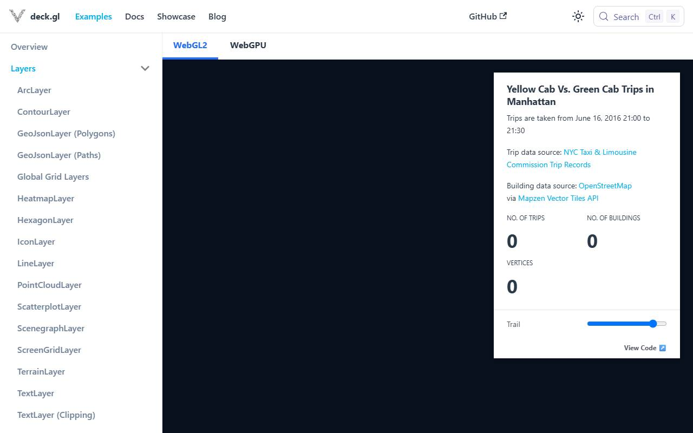
deck.gl timed out in headless captureCopy deck.gl's TripsLayer timing model: a scrubber drives a single clock, trails fade by age, homes brighten the instant the swath edge crosses them. Replay the swath; never invent per-house hits.
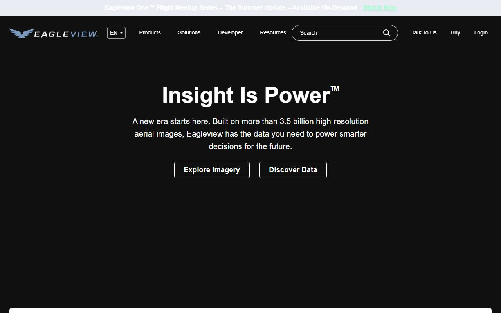
eagleview.com blocked headless capture'">Copy EagleView's report staging: footprint first, planes rise in order, ridge last, then measurements label in. Hover's capture flow shows the same "your house, measured" tone. One hail-size badge, no fake impact dots.
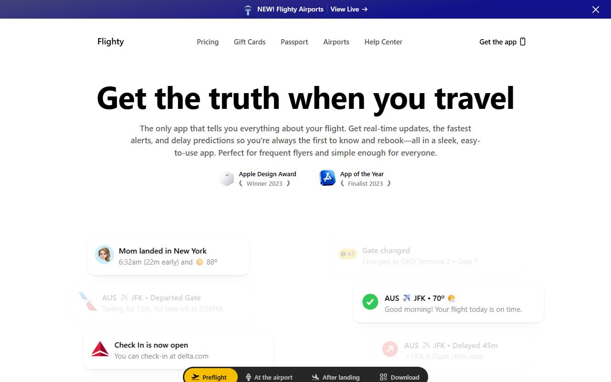
flighty.com blocked headless capture'">Copy Flighty's pre-flight card: three facts in three beats (which storm, how many streets, first stop), then the deck fans out. Flighty proves a briefing can be a second long and still feel considered.
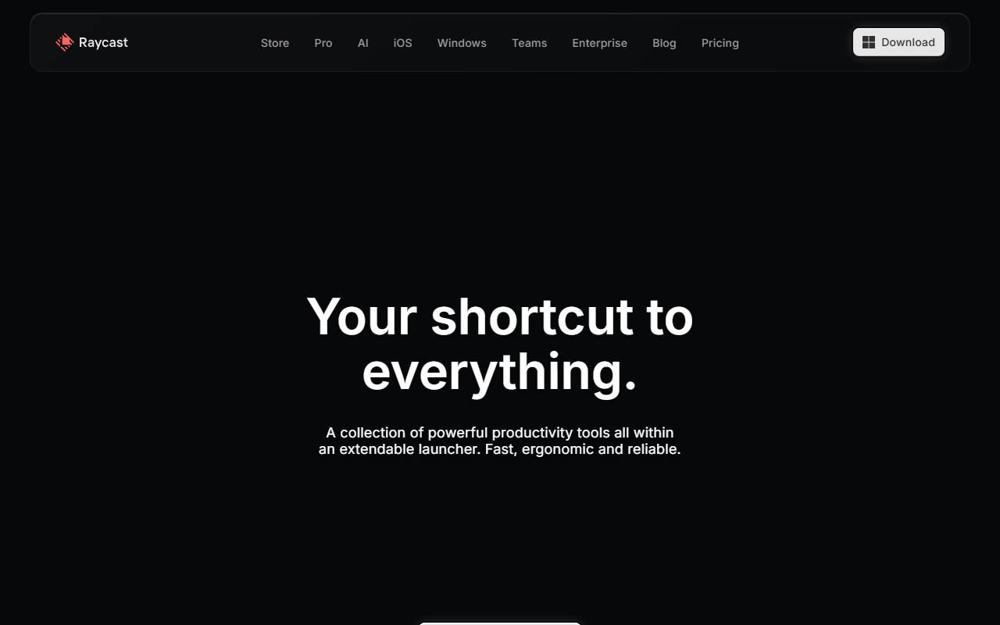
raycast.com blocked headless capture'">Copy the Siri orb grammar: slow breathing when idle, one teal ripple on a real event (new reply, new storm), faster swirl while answering. Raycast AI shows how to keep the shape small and quiet in a working tool.
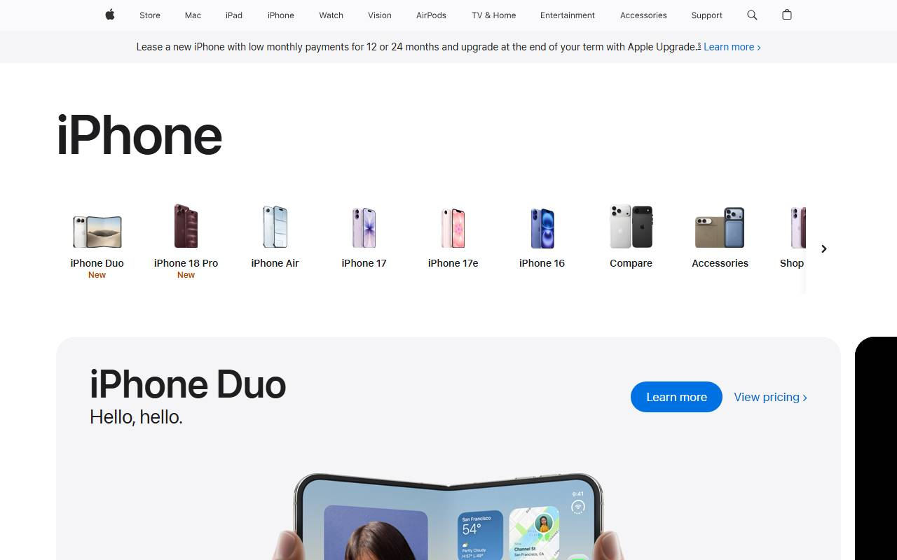
apple.com blocked headless capture'">Copy the Apple Wallet pass: fixed header (address), stamp rows beneath (one per hail event with date and MESH size), new stamps press in. Label hail as radar-estimated size, never confirmed damage.
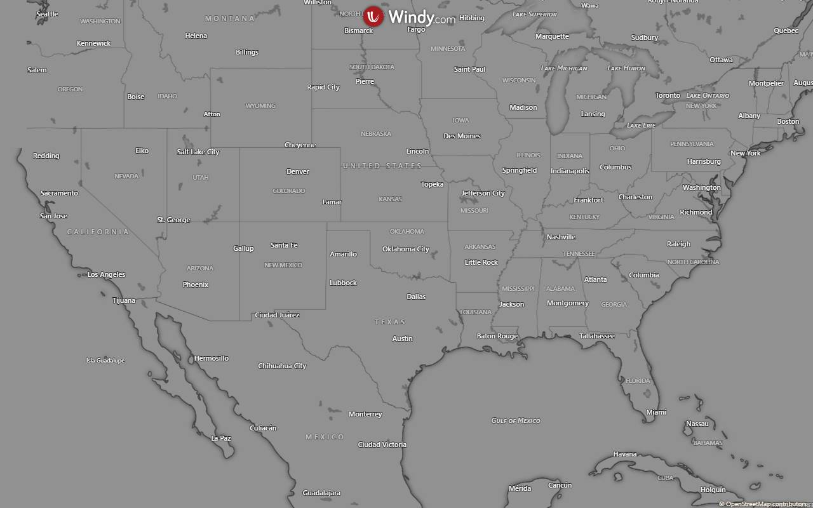
windy.com did not finish loading in headless capture'">Copy Windy's radar look: one translucent beam, swaths flash as it crosses, newest brightest. Build as a CSS conic-gradient mask over the existing swath layer, one rotation, off under reduced-motion.
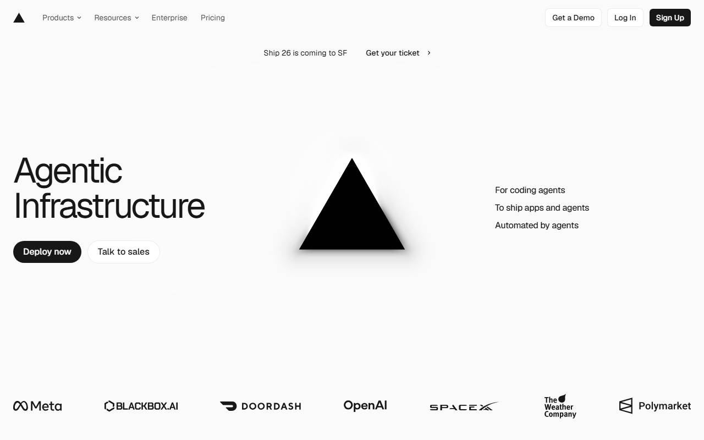
vercel.com blocked headless capture'">Copy Vercel's insight cards for the numbers and Flighty's year review for the swipe pacing: one fact per card, big tabular numeral, honest empty state ("No storms this week") instead of a dressed-up zero.
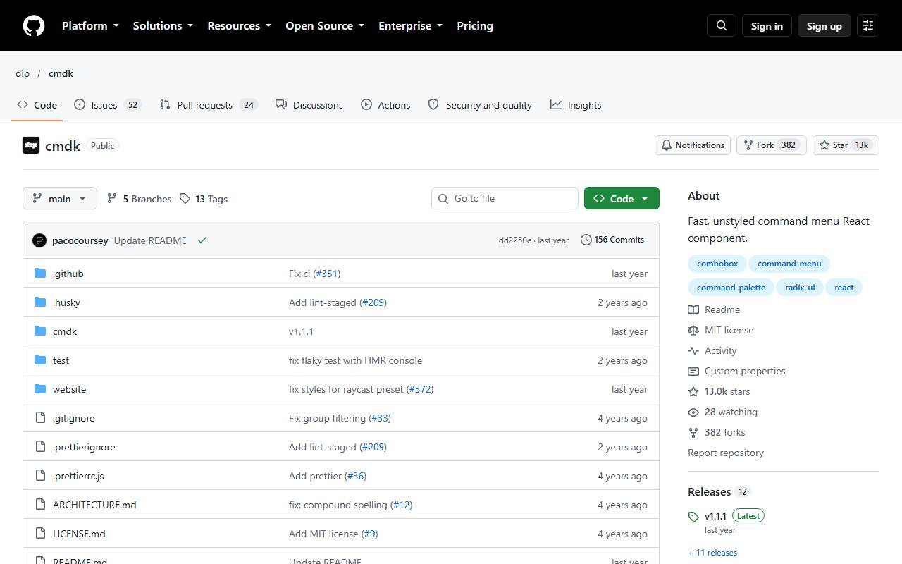
cmdk.paco.me blocked headless capture'">Copy cmdk directly: grouped results (Homes, Streets, Storms, Actions), arrow keys, Enter to jump. Linear's palette is the behaviour benchmark; Raycast's frosted panel is the look.
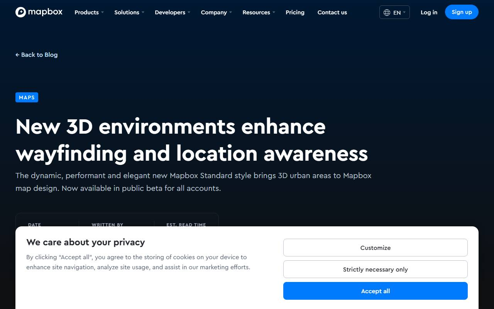
mapbox.com blocked headless capture'">Copy Mapbox Standard's four light presets (dawn, day, dusk, night) keyed to Plano local time. The app runs MapLibre, so this is four palette variants of the style plus brighter message lines after dark, not a preset flag.
Eight details not yet on the list, ranked by impact per effort. The top five are marked.
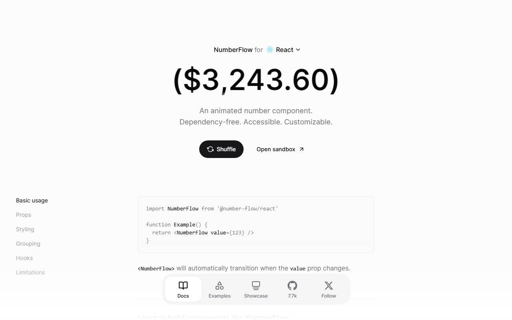
number-flow.barvian.me blocked headless captureSees: when a reply is marked "inspection booked", the pipeline count rolls digit by digit like an odometer, the row lifts and settles on a spring, and a quiet toast confirms with Undo. No sound, no confetti. Does: Undo within five seconds reverses it.
Stripe-grade restraint: the celebration is the number itself moving. It only reflects a real status change, so the counter doubles as the client's trust meter. NumberFlow and Sonner are tiny free libraries.
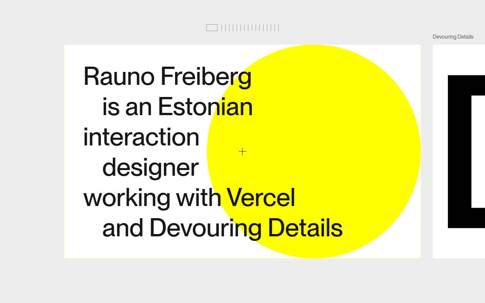
rauno.me blocked headless capture'">Sees: the send button for a cold text has no instant click. Press and hold: a teal ring fills over about 600 ms, the button compresses, and the message leaves on release with a short vibrate on phones. Let go early and it springs back, nothing sent. Does: hold to send, release to cancel.
Roof Command's rule is that cold sends are human-tapped. Rauno's hold-to-confirm turns that policy into a tactile moment: deliberate, safe, premium. Also kills accidental sends from a pocket.
Sees: on the first open after the 08:15 storm refresh finds new hail in the service area, the intro's falling hail returns over a dark panel: storm date, towns hit, MESH max, and the count of homes in Jackson's territory inside the swath. One button: "Build today's 50 from this storm". Does: press it and the Daily 50 regenerates from that swath.
The single moment that proves the system watches the sky for him. Fires only on real new swaths from the daily refresh; on quiet days nothing appears, which is what keeps it credible.
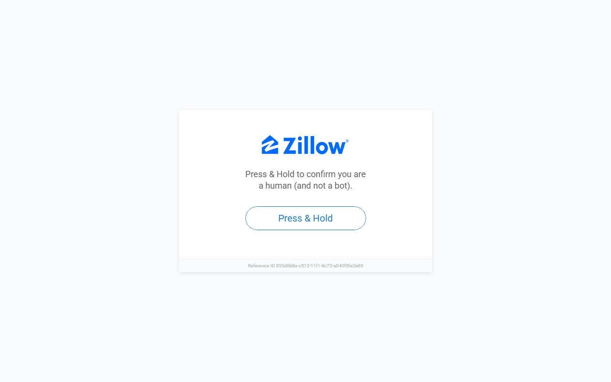
zillow.com blocked headless capture'">Sees: on any home card, "Send proof" creates a private link to a one-screen page in Jackson's colours: the homeowner's address, the roof outline, every hail event that touched it with date and radar-estimated size, and a "Book a free inspection" call button. Does: Chris texts the link; the page records when it was opened.
Zillow 3D and Hover reports make a house feel documented. Here the document carries Jackson's logo, so the tool is visibly working for his brand in front of his customers. Hail data and roof outline already exist; the page is a template plus a signed link.
Sees: when the Daily 50 is set, a single line draws from the Jackson office across Plano street by street, lighting each of the 50 homes in drive order as it passes. Does: tap "Open in Maps" for the first stop.
deck.gl's trips layer and Flighty's flight path make movement feel planned. The route is the real knock order from js/knock.js, so the line is a promise the app can keep.
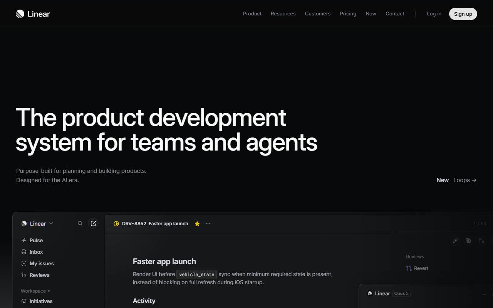
linear.app rendered blank in headless capture'">Sees: hovering or long-pressing any stat shows a small "Why?" chip. Tap it and Nimbus explains the number in one sentence using only the rows behind it ("41 of today's 50 sit on two streets inside the Aug 16 swath"). Does: "Show them" filters the map to those rows.
Linear and Vercel make every figure clickable and explainable. The sentence is generated from the query behind the stat, so Nimbus cannot make anything up.
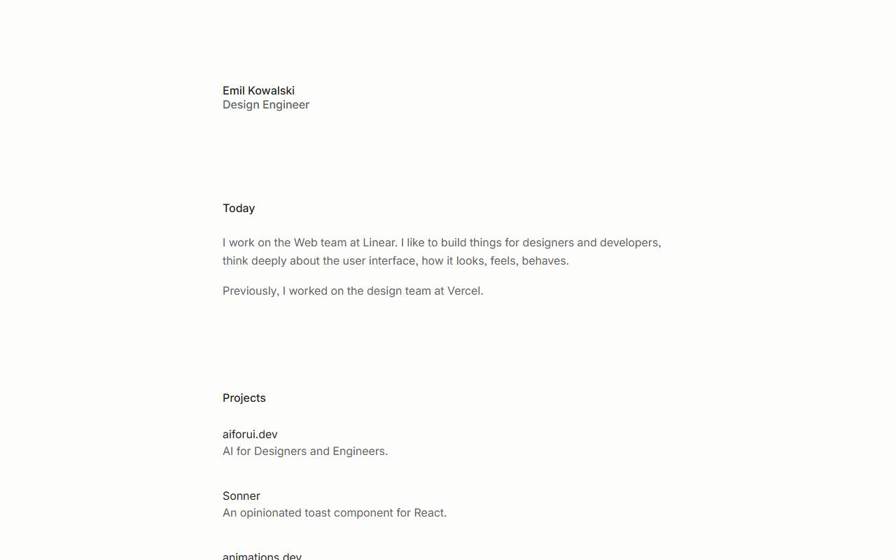
emilkowal.ski blocked headless capture'">Sees: every primary button presses in to 0.97 scale on pointer-down and springs back on release; Daily 50 cards drag with inertia and snap; on phones a 10 ms vibrate on confirm actions. Does: nothing new, it just feels solid.
The Emil Kowalski layer: craft you feel before you can name it. Pure CSS transitions plus one spring curve; navigator.vibrate is free on Android and ignored elsewhere.
Sees: on desktop, frosted panels carry a faint light that follows the cursor across their surface, and the panel under the pointer lifts a few pixels; on touch the light sits where the thumb last was. Does: nothing; it makes the glass look like glass.
Stripe and Rauno's spotlight cards sell "material" cheaply: one radial gradient driven by two CSS variables. It is the difference between flat cards and a surface. Low priority because it is pure polish.
Left off on purpose: fake AI agents, invented homeowner names, confetti, sound, green status dots, any per-facet "damage detected" marks, and anything that sends without a human hand. Reference screenshots live in refs/ beside this file; a few sites block headless capture and their cards say so.